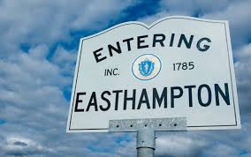
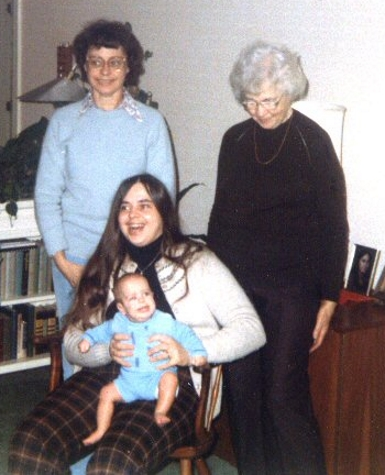
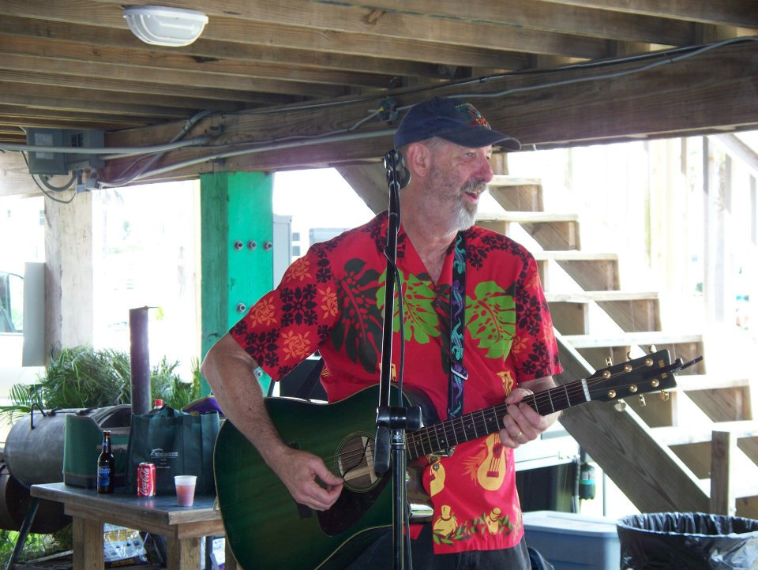
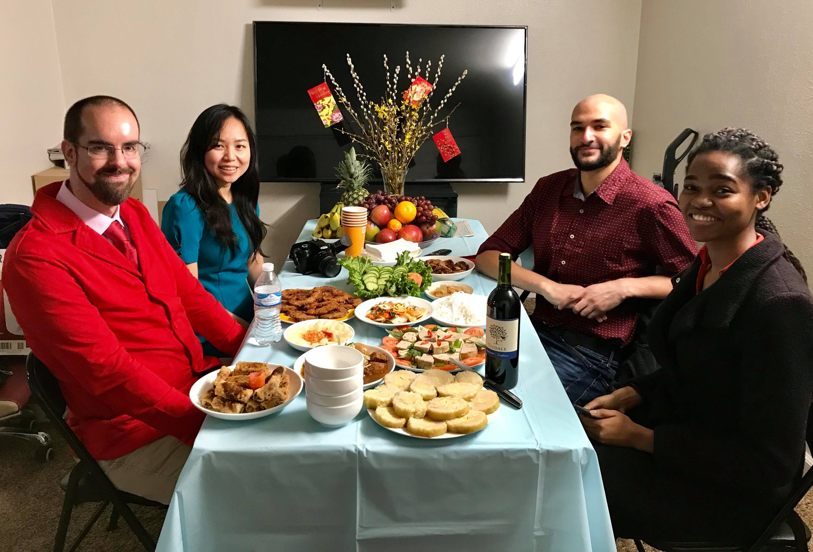

David Landry's Bio
Here are some interesting facts about David. Do you have any questions to contribute? Contact David to have your question answered!
|
    
×
|
Name: | David Landry |
| Hometown: | Easthampton, MA | |
| Current Residence: | Lynnwood, WA | |
| Favorite music: | I have a wide, eclectic taste in music. I enjoy classical music, especially J.S. Bach. I also enjoy pop rock music from the 70's and 80's, with some of my favorites including Elton John, Billy Joel, Phil Collins, Genesis, America, and the Doobie Brothers. Lately, I've been getting into some forms of metal music with some favorites being Fozzy, Eluveitie, Wind Rose, Antti Martikainen, and Apocalypse Orchestra. I also enjoy some folk music (Patty Gurdy and Lindsey Stirling are two of my new favorites!) and some Christian gospel music too, with Robin Mark being a favorite. | |
| Favorite food: | I enjoy experiencing other cultures through food! I don't necessarily have a favorite, but I enjoy exploring new foods from other cultures. Lately, I've been enjoying exploring Asian cuisine. My favorite go-to junk foods include pizza and cookies. When cooking, I like to prepare stews and casseroles. |